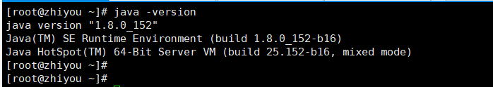
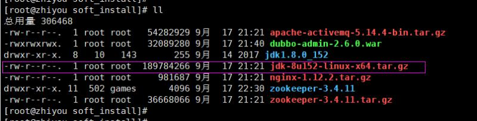
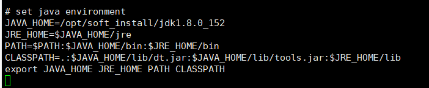
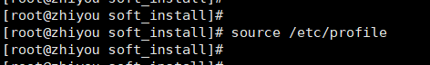
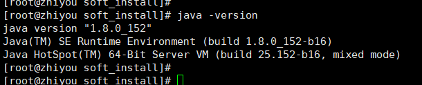

首先，我们需要检查一下服务器是否安装过java环境，可以使用如下命令：
java -version

这里，我们默认系统未安装过java环境，且服务器无法连接外网。我们采用上传jdk环境安装包的方式进行jdk的安装。

修改 /etc/profile 文件，使用如下命令：
vim /etc/profile
进入 /etc/profile 文件后，在末尾添加上如下内容：
# set java environment
JAVA_HOME=/opt/soft_install/jdk1.8.0_152
JRE_HOME=$JAVA_HOME/jre
PATH=$PATH:$JAVA_HOME/bin:$JRE_HOME/bin
CLASSPATH=.:$JAVA_HOME/lib/dt.jar:$JAVA_HOME/lib/tools.jar:$JRE_HOME/lib
export JAVA_HOME JRE_HOME PATH CLASSPATH这里需要注意JAVA_HOME具体的安装路径~

然后，保存该文件，jdk的配置已经完成了。最后还需要执行以下命令，使修改的配置生效！
source /etc/profile

至此，java环境已经安装完毕！我们执行 java -version 检查一下：
